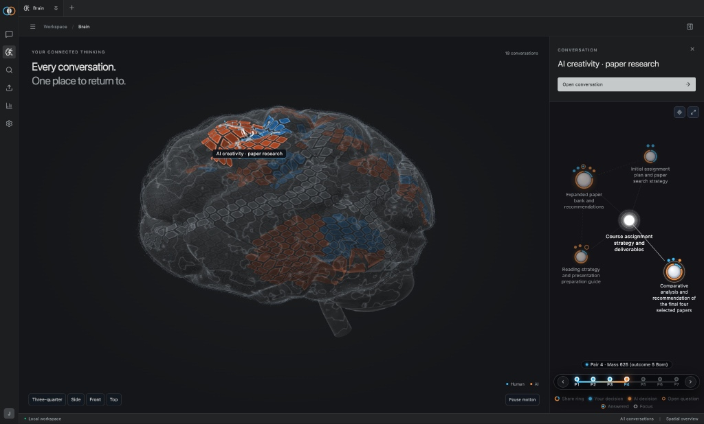
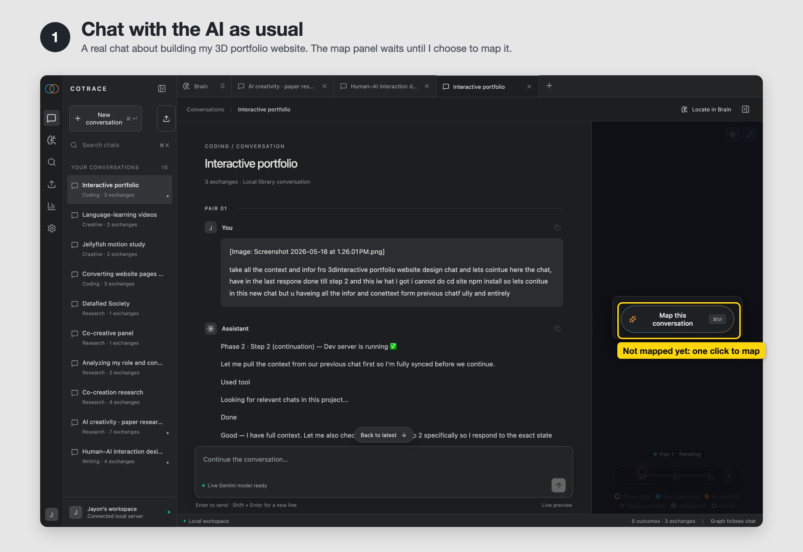
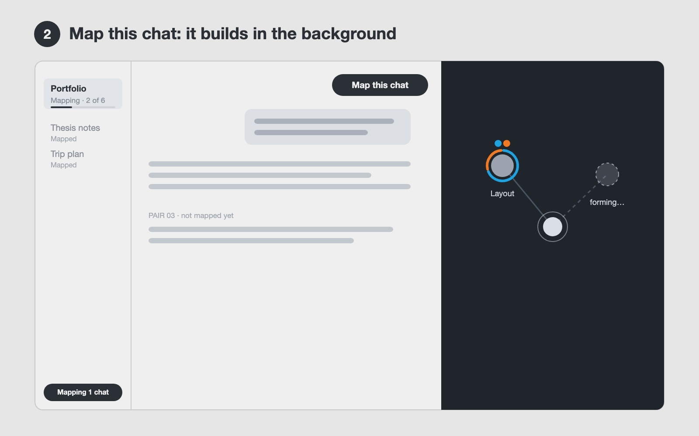
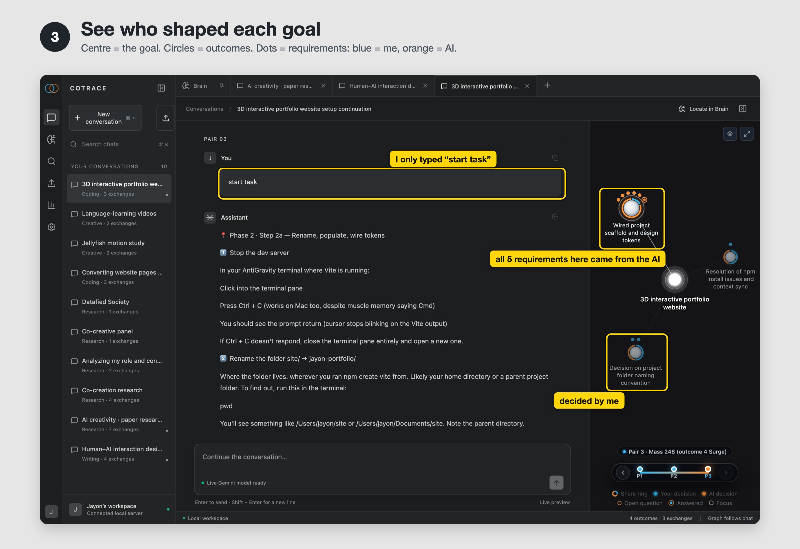
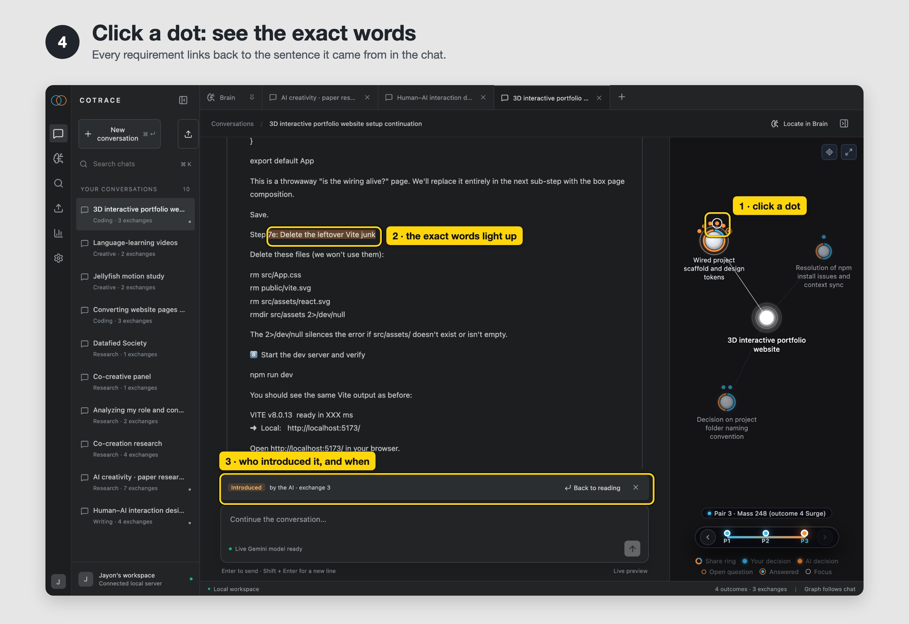
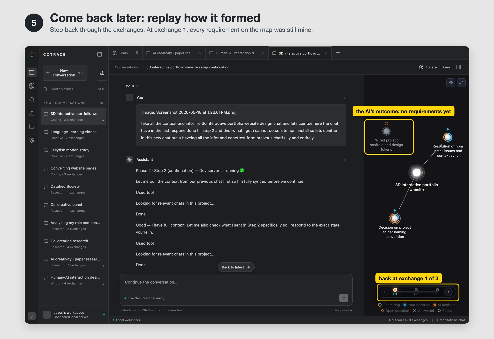
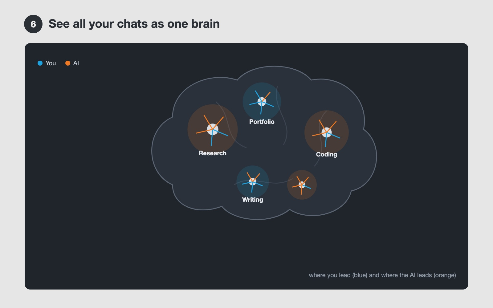

information
- Title: Symbiot
- Category: Semester project
- Student/s: Jayon K Vinod
- Course Title: Designing for Competence
- Lecturer/s: Peter Von Maydell
- Year: 2026
Abstract
Symbiot is an AI chat that draws a live map of each conversation and shows which ideas came from you and which came from the AI. It sorts the dialogue into one goal, its outcomes and their requirements, colours every requirement blue (you) or orange (AI), and links it back to the exact words in the chat. A brain view shows this balance across all your chats, so you can see when the AI starts steering.

In short
Symbiot is a chat interface for people who work on long creative or research projects with AI. It maps every chat into goal → outcomes → requirements and shows who shaped each part, so you stay aware of your own direction instead of drifting with the AI's suggestions. It is built on CoTrace, a published method for measuring how much an AI shapes a person's goals.
Context
While building my portfolio projects with AI, I kept following suggestions that sounded good. After a few days I could no longer say which ideas were mine and which were the AI's. The chats were long and hard to look back through, and the overload made me lose track of what I had decided.
The course asks how a tool can build competence instead of replacing it. Symbiot's answer is awareness, not restriction: it never blocks or corrects the AI. It makes the AI's influence visible, so the human stays the one who decides.
Platform
A desktop web app that runs locally on your computer and opens in the browser. You chat with the AI inside it, or bring in earlier chats. The chat sits on the left and its map on the right. The mapping uses a language model (Gemini) in the background.
How the map works
The examples are from my real chat about setting up my 3D portfolio website.
| Part | What it is | Example from my chat |
|---|---|---|
| Goal (bright centre) | What the whole chat is about | "3D interactive portfolio website" |
| Outcome (circle) | Something I want to end up with | "Wired project scaffold and design tokens" |
| Requirement (small dot) | One concrete decision about that outcome | "Leftover Vite files must be deleted" |
| Colour | Who brought the requirement in | blue = me · orange = the AI |
| Open question (hollow ring) | Something raised but not yet decided | "Which folder name?" |
| Share ring | The ring around an outcome: how much of it came from me and how much from the AI | mostly orange on the scaffold outcome |
| Timeline (P1, P2, P3 …) | One step per exchange (my message plus the AI's reply) | 3 exchanges |
What happens in the chat
I chat with the AI as usual. The map panel stays empty.
I press Map this conversation (or ⌘M).
In the background, the CoTrace pipeline reads the chat one exchange at a time. It finds the goal, splits it into outcomes, pulls out the requirements and decides who introduced each one: me or the AI.
The map grows next to the chat. The sidebar shows the progress, and I can keep reading and writing.
Clicking any dot scrolls the chat to the exact words it came from and highlights them.
The timeline replays how the map formed, exchange by exchange.
The Brain page shows all mapped chats together. Locate in Brain finds the current chat there.
Prototype status: everything shown below works in the current prototype. It runs locally, and mapping a chat calls the paid Gemini API.
Use case: setting up my 3D portfolio website with AI
A real chat with three exchanges:
I ask the AI to continue the setup from an earlier chat.
I choose a folder name.
I type only "start task", and the AI answers with a long step-by-step plan.
1. Chat with the AI as usual
- A normal chat. The map panel waits until I choose to map it.

2. Map it: it builds in the background
- I press Map this conversation.
- The chat is analysed one exchange at a time, and the sidebar shows "Mapping · 1 of 3".
- I can keep reading and writing. Nothing is blocked.

3. See who shaped each goal
- The goal sits in the centre with four outcomes around it.
- Two outcomes hold only my own requirements (blue): fixing the npm install and the folder name.
- "Wired project scaffold and design tokens" holds five requirements, and all five came from the AI. Three of them arrived right after I typed only "start task".

4. Click a dot to see the exact words
- I click an orange dot.
- The chat jumps to the AI's sentence "7e: Delete the leftover Vite junk" and highlights it.
- A strip reads "Introduced by the AI · exchange 3". Back to reading returns me to where I was.
- Now I can decide on purpose whether I agree.

5. Come back later and replay how it formed
- I step back to exchange 1.
- At that point every requirement on the map was mine, and the AI's outcome had none yet.
- This shows when the AI took over.

6. See all my chats as one brain
- Each mapped chat claims a patch of the brain, sized by how much happened in it and grouped by topic.
- Inside each patch, blue cells are my share and orange cells are the AI's.
- Any chat is one click away.

Built on
CoTrace: Kim, Mindel, Kim and Wu, Measuring AI Contributions to Goal Shaping, arXiv 2605.21363. Code: github.com/rladmstn1714/CoTrace.
CoTrace is a research method that analyses a finished chat afterwards. Symbiot adds three things on top of it:
- a map next to the chat
- a link from every requirement back to its exact words
- a brain across all chats
Try running Symbiot with your real chats
If you want to run Symbiot locally on your machine with your own data and API key:
Start the app:
- In your terminal, run
./cotrace start. - It will open your browser at
http://localhost:8765. - Ten reference chats are already loaded so you can explore the interface right away without setting anything up.
Add your Gemini key (for live mapping):
- Click the gear icon (Settings) in the bottom-left corner.
- Paste your free Google Gemini API key from aistudio.google.com.
- Click Test Connection to make sure it works, then Save.
- Your key stays on your computer in
~/.Cotrace/secrets.jsonand is never sent anywhere else.
Drop in your own chat:
- Click the Upload icon at the top of the sidebar.
- Drag and drop your Claude or ChatGPT export file (
.ziporconversations.json), or any JSON transcript. - Symbiot shows you the chats inside. Pick one and click Import & Map.
Watch it map in real time:
- The map grows exchange by exchange next to your conversation.
- Click any requirement node to jump straight to the exact words where you or the AI introduced it.
Limitations
- Cost: Running the mapping calls Google Gemini in the background. Because it makes multiple model calls per exchange, it costs real money: about $0.02 for a short 3-exchange chat, and around $0.30 for a long 21-exchange chat.
- Time: As the dialogue grows, the pipeline takes longer because it re-checks earlier decisions to keep the map consistent. A 3-exchange chat maps in about 1 minute, but a 21-exchange chat can take 8 to 10 minutes.
- The Brain view is early: The Brain page is still a rough prototype. The grouping and visual layout need to be redesigned to show large libraries of chats clearly.
Future upgrades
- Live inside your chats: The main goal is for people to use Symbiot directly while chatting with ChatGPT or Claude, instead of mapping it afterwards.
- Browser extension: Turn this standalone app into a browser extension that works on top of any AI chat interface.
- A better Brain view: Improve how the Brain page categorises chats by topic and visualises the balance across all of them.
- UI polish: Refine the interface, smooth out the transitions, and make timeline scrubbing feel better.